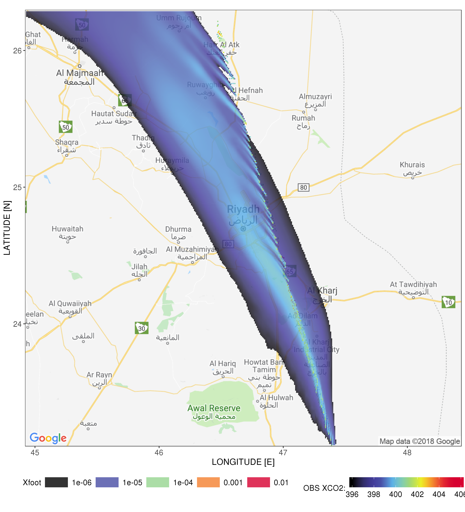
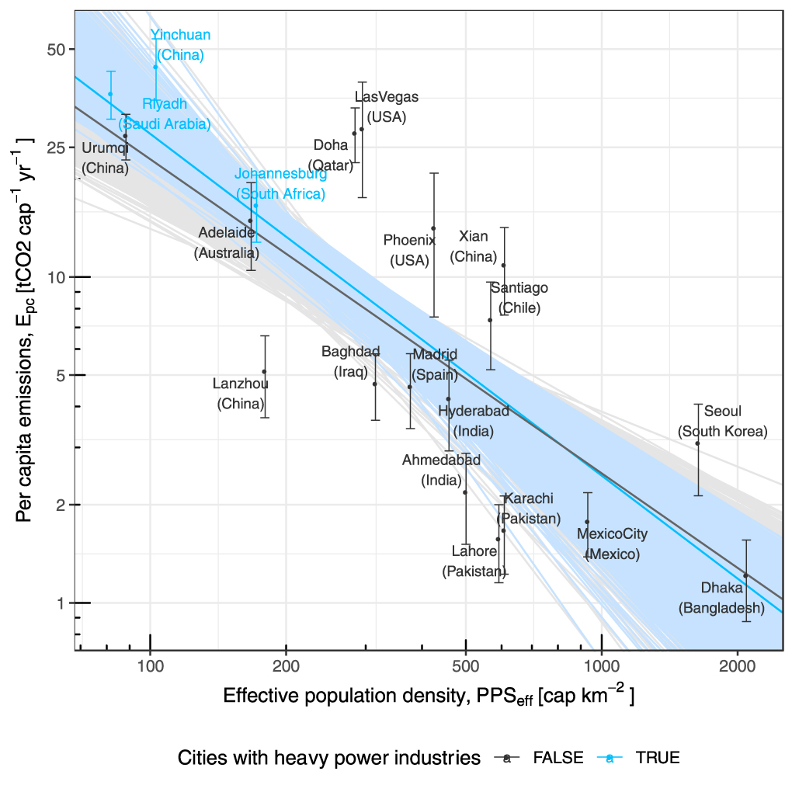
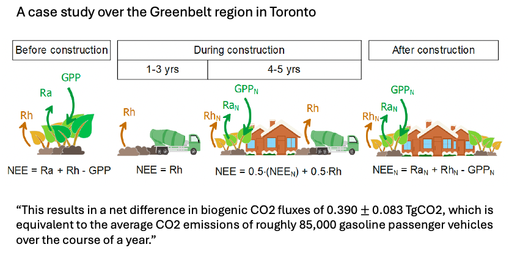
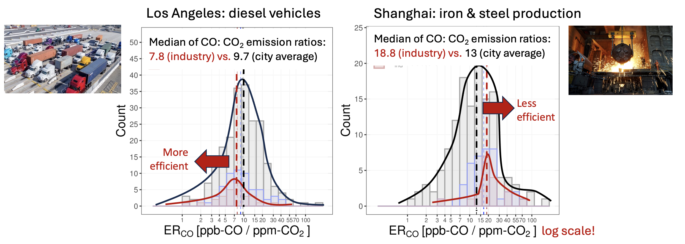
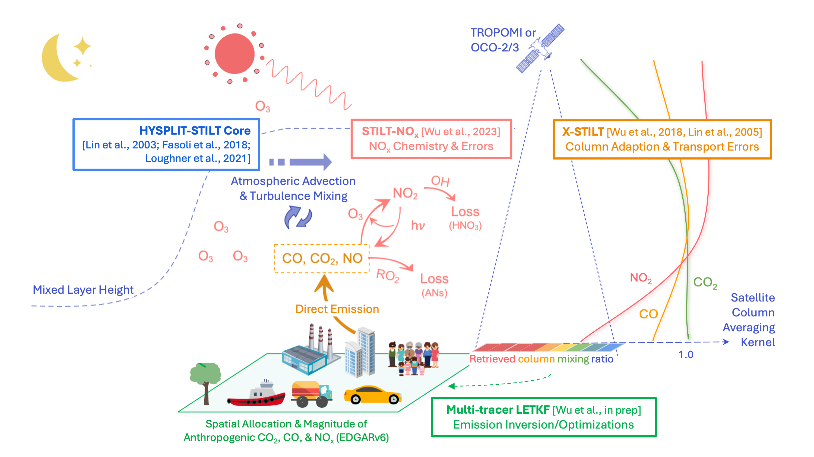

<!DOCTYPE html>
<html>
<head><meta name="generator" content="Hexo 3.9.0">
  <meta charset="utf-8">
  
  <title>Research - Wu Group</title>
  <meta name="viewport" content="width=device-width, initial-scale=1, maximum-scale=1">
  <meta name="description" content="The overarching goal of research is to investigate human impacts on carbon, pollution, water, and energy fluxes using atmospheric observations as key constraints!  Current Research Grants:  NASA Carbo">
<meta property="og:type" content="website">
<meta property="og:title" content="Research">
<meta property="og:url" content="http://dienwu.me/research/index.html">
<meta property="og:site_name" content="Wu Group">
<meta property="og:description" content="The overarching goal of research is to investigate human impacts on carbon, pollution, water, and energy fluxes using atmospheric observations as key constraints!  Current Research Grants:  NASA Carbo">
<meta property="og:locale" content="en">
<meta property="og:image" content="http://dienwu.me/image/research/Fig_xfoot.png">
<meta property="og:image" content="http://dienwu.me/image/research/Fig_erl.jpeg">
<meta property="og:image" content="http://dienwu.me/image/research/Fig_SMUrF.png">
<meta property="og:image" content="http://dienwu.me/image/research/Fig_Toronto.png">
<meta property="og:image" content="http://dienwu.me/image/research/Fig_ERCO.png">
<meta property="og:image" content="http://dienwu.me/image/research/Fig_multi.png">
<meta property="og:updated_time" content="2025-04-05T23:37:50.527Z">
<meta name="twitter:card" content="summary">
<meta name="twitter:title" content="Research">
<meta name="twitter:description" content="The overarching goal of research is to investigate human impacts on carbon, pollution, water, and energy fluxes using atmospheric observations as key constraints!  Current Research Grants:  NASA Carbo">
<meta name="twitter:image" content="http://dienwu.me/image/research/Fig_xfoot.png">
  
  
  <link href="/webfonts/ptserif/main.css" rel="stylesheet" type="text/css">
  <link href="/webfonts/source-code-pro/main.css" rel="stylesheet" type="text/css">
  <link rel="stylesheet" href="http://cdnjs.cloudflare.com/ajax/libs/highlight.js/9.9.0/styles/monokai.min.css">
  <link rel="stylesheet" href="/css/style.css">
  
<!-- Google tag (gtag.js) -->
<script async src="https://www.googletagmanager.com/gtag/js?id=G-1XWGSJVW0K"></script>
<script>
  window.dataLayer = window.dataLayer || [];
  function gtag(){dataLayer.push(arguments);}
  gtag('js', new Date());
  gtag('config', 'G-1XWGSJVW0K', { 'debug_mode':true });
</script>
</head>
</html>
<body>
  <div id="container">
    <header id="header">
  <div id="header-outer" class="outer">
    <div id="header-inner" class="inner">
      <a id="main-nav-toggle" class="nav-icon" href="javascript:;"></a>
      <a id="logo" class="logo logo-text" href="/">Group</a>
      <nav id="main-nav">
        
          <a class="main-nav-link" href="/">Home</a>
        
          <a class="main-nav-link" href="/people">People</a>
        
          <a class="main-nav-link" href="/research">Research</a>
        
          <a class="main-nav-link" href="/travel">Travel</a>
        
      </nav>
      <nav id="sub-nav">
        <div id="search-form-wrap">
          <form action="//google.com/search" method="get" accept-charset="UTF-8" class="search-form"><input type="search" name="q" class="search-form-input" placeholder="Search"><button type="submit" class="search-form-submit">&#xF002;</button><input type="hidden" name="sitesearch" value="http://dienwu.me"></form>
        </div>
      </nav>
    </div>
  </div>
</header>
    <section id="main" class="outer"><article id="page-undefined" class="article article-type-page" itemscope itemprop="blogPost">
  <div class="article-inner">
    
    
      <header class="article-header">
        
  
    <h1 class="article-title" itemprop="name">
      Research
    </h1>
  

      </header>
    
    <div class="article-meta">
      
        <a href="/research/index.html" class="article-date">
  <time datetime="2025-04-05T23:38:00.636Z" itemprop="datePublished">2025-04-05</time>
</a>
      
      
      
    </div>
    <div class="article-entry" itemprop="articleBody">
      
        <p>The overarching goal of research is to investigate human impacts on carbon, pollution, water, and energy fluxes <em>using atmospheric observations as key constraints!</em></p>
<h4 id="current-research-grants"><a class="markdownIt-Anchor" href="#current-research-grants"></a> Current Research Grants:</h4>
<ul>
<li>NASA Carbon Monitoring System (Funded, 2025-2028, PI: Junjie Liu)</li>
<li>NASA TEMPO/ACX (Selected with official notice awaiting, PI: Dien Wu)</li>
</ul>
<h4 id="specific-research-topics"><a class="markdownIt-Anchor" href="#specific-research-topics"></a> Specific research topics:</h4>
<ul>
<li>Urban carbon cycle - <a href="#urban-ff">anthropogenic</a> <a href="#urban-nee">and biogenic</a></li>
<li>Bridging GHGs and Air Pollutants - <a href="#erco">CO</a>, <a href="#nox">NO<sub>x</sub></a></li>
<li>Pyrogenic emissions of CO and PM2.5 from space</li>
<li><a href="#irr">Agricultural water use over the Central Valley</a></li>
<li>Soil emissions from agricultural land</li>
</ul>
<hr>
<h2 id="a-nameurban-ffa-i-anthropogenic-cosub2sub-emissions-for-cities"><a class="markdownIt-Anchor" href="#a-nameurban-ffa-i-anthropogenic-cosub2sub-emissions-for-cities"></a> <a name="urban-ff"></a> I. Anthropogenic CO<sub>2</sub> emissions for cities 🌆</h2>
<h3 id="q1-how-much-fossil-fuel-cosub2sub-do-cities-produce"><a class="markdownIt-Anchor" href="#q1-how-much-fossil-fuel-cosub2sub-do-cities-produce"></a> Q1: How much fossil fuel CO<sub>2</sub> do cities produce?</h3>
<p>To answer this question from a <em>top-down</em> perspective, I developed the Column version of the Stochastic Time-Inverted Lagrangian Transport, X-STILT (<a href="https://doi.org/10.5194/gmd-11-4843-2018" target="_blank" rel="noopener">Wu et al., GMD, 2018</a>) based on <a href="https://github.com/uataq/stilt" target="_blank" rel="noopener">the STILT model version 2</a> (Lin et al., 2003, Fasoli et al., 2018). <strong>This X-STILT model can now work with other sensors, e.g., <a href="https://www.tropomi.eu/" target="_blank" rel="noopener">TROPOMI</a>, <a href="https://tccon-wiki.caltech.edu/Main/WebHome" target="_blank" rel="noopener">TCCON</a>, <a href="https://www.bruker.com/en/products-and-solutions/infrared-and-raman/remote-sensing/em27-sun-solar-absorption-spectrometer.html" target="_blank" rel="noopener">EM27/SUN</a> and has now been increasingly used by the remote sensing GHG community! =)</strong></p>
<ul>
<li>Initially designed for interpreting OCO-2 data by incorporating sounding-specific weighting profiles (e.g., AK and PWF) and has now been modified for OCO-3 and TROPOMI (CO, <a href="#nox">NO<sub>2</sub></a>, CH<sub>4</sub>).</li>
<li>Provide the atmospheric transport and calculate the imprints of potential upwind sources and sinks onto downwind satellite column measurements (so-called “column footprint”).</li>
<li>Provide comprehensive horizontal and vertical transport uncertainties of column CO<sub>2</sub> (XCO<sub>2</sub>).</li>
<li>Model code archived on <a href="https://github.com/uataq/X-STILT" target="_blank" rel="noopener">GitHub</a>; with a <a href="https://www.youtube.com/watch?v=hMdiWlSyGj4" target="_blank" rel="noopener">Cesium animation</a> demonstrating how the model works.</li>
</ul>
<hr>
<h3 id="q2-does-an-individual-in-denser-cities-produce-more-carbon"><a class="markdownIt-Anchor" href="#q2-does-an-individual-in-denser-cities-produce-more-carbon"></a> Q2: Does an individual in denser cities produce more carbon?</h3>
<p><strong>Scientific gap &amp; significance:</strong> We provide the first independent observational constraint on per capita emissions and their relationship with population density and per capita GDP, by using spaceborne CO<sub>2</sub> measurements from OCO-2. Previous urban-scaling studies relied on bottom-up inventory with implicit assumptions between emissions and population (density). Our method provides (1) an objective definition of urban extent and (2) observational constraints from satellite retrieved mixing ratios, which were lacking from previous studies.<br>
</p>
<p><strong>Key finding:</strong> Combined with population density data, we were able to derive independent emission estimates of per capita CO<sub>2</sub> emissions for 20 cities around the world, which are anti-correlated with population density using satellite data (<a href="https://iopscience.iop.org/article/10.1088/1748-9326/ab68eb" target="_blank" rel="noopener">Wu et al., ERL, 2020</a>), shedding light on sustainable urban development. <strong>Yet, such anti-correlation between emissions per capita and population density is partially offset by the effect from GDP.</strong> We also identify cities’ roles in “net exporting” or “importing” carbon, which matters for carbon accounting.</p>
<p>This work was featured by <a href="https://www.jpl.nasa.gov/news/news.php?feature=7613" target="_blank" rel="noopener">NASA</a> and <a href="https://attheu.utah.edu/facultystaff/nasa-satellite-offers-urban-carbon-dioxide-insights/" target="_blank" rel="noopener">the U</a>. This method has now been applied to reveal inter-city variability over 77 cities, which is about ~16% of the global urban CO<sub>2</sub> emissions (Wilmot et al., in review).</p>
<hr>
<h2 id="a-nameurban-neea-ii-biogenic-cosub2sub-fluxes-over-cities"><a class="markdownIt-Anchor" href="#a-nameurban-neea-ii-biogenic-cosub2sub-fluxes-over-cities"></a> <a name="urban-nee"></a> II. Biogenic CO<sub>2</sub> fluxes over cities 🌳</h2>
<h3 id="q1-how-much-cosub2sub-does-urban-vegetation-uptake"><a class="markdownIt-Anchor" href="#q1-how-much-cosub2sub-does-urban-vegetation-uptake"></a> Q1: How much CO<sub>2</sub> does urban vegetation uptake?</h3>
<p>A new approach to separate biogenic fluxes from anthropogenic emissions: <em>A Model for Urban Biogenic CO<sub>2</sub> Fluxes: Solar-Induced Fluorescence for Modeling Urban biogenic Fluxes</em> (SMUrF, <a href="https://github.com/wde0924/SMUrF" target="_blank" rel="noopener">Wu et al., GMD, 2021</a>).<br>
</p>
<ul>
<li>Leverage the power of Solar-Induced Fluorescence (SIF) in predicting Gross Primary Production and neural network in estimating Ecosystem Respiration. Check out model scripts and data release from <a href="/gmd2021">here</a>.</li>
<li>Quantify and validate biogenic fluxes against flux tower observations around the globe.</li>
<li>Reveal differences between biogenic vs. anthropogenic fluxes over 40 cities.</li>
<li>Reveal urban-rural contrast in NEE fluxes and their diurnal cycles.</li>
<li>Estimate imprints on atmospheric CO<sub>2</sub>.</li>
</ul>
<p><strong>SMUrF has been increasingly used and evaluated over Europe and Canada:</strong></p>
<ol>
<li>against radiocarbon measurements in London (<a href="https://agupubs.onlinelibrary.wiley.com/doi/10.1029/2023GL103834" target="_blank" rel="noopener">Zazzeri et al., GRL, 2023</a>);</li>
<li>against independent eddy-covariance towers in Canada (Madsen et al., in prep);</li>
<li>as biogenic priors for testing the ability of MicroCarb over Paris and London (<a href="https://amt.copernicus.org/articles/16/581/2023/" target="_blank" rel="noopener">Wu et al., AMT, 2023</a>).</li>
</ol>
 
<h3 id="q2-how-will-land-use-change-in-cities-affect-the-cosub2sub-sequestration"><a class="markdownIt-Anchor" href="#q2-how-will-land-use-change-in-cities-affect-the-cosub2sub-sequestration"></a> Q2: How will land use change in cities affect the CO<sub>2</sub> sequestration?</h3>
<p>Check out this super cool study led by <a href="https://sites.physics.utoronto.ca/debrawunch/current-students/sabrina-madsen-phd-student" target="_blank" rel="noopener">Sabrina Madsen</a> from the University of Toronto!! Sabrina utilized and improved SMUrF over high-latitude regions using downscaled TROPOMI SIF and investigated the impact of urban land use change on carbon sequestration (<a href="https://doi.org/10.1525/elementa.2023.00102" target="_blank" rel="noopener">Madsen et al., 2024</a>).</p>
<hr>
<h2 id="iii-bridging-climate-related-ghgs-and-environment-related-air-pollutants"><a class="markdownIt-Anchor" href="#iii-bridging-climate-related-ghgs-and-environment-related-air-pollutants"></a> III. Bridging climate-related GHGs and environment-related Air Pollutants 🚗</h2>
<h3 id="a-nameercoa-q1-do-heavy-industries-in-a-city-burn-less-efficiently"><a class="markdownIt-Anchor" href="#a-nameercoa-q1-do-heavy-industries-in-a-city-burn-less-efficiently"></a> <a name="erco"></a> Q1: Do heavy industries in a city burn less efficiently?</h3>
<p>Yes and No - depending on the specific types of industrial activities. By combining space-based CO and CO<sub>2</sub> observations (<a href="https://acp.copernicus.org/articles/22/14547/2022/acp-22-14547-2022.html" target="_blank" rel="noopener">Wu et al., ACP, 2022</a>), we examine several KEY factors that can influence the interpretation of ER<sub>CO</sub> using TROPOMI and OCO-3, and identify distinct combustion efficiencies between cities and within city area (i.e., areas strongly affected by heavy industry in a city). The novelty comes from the integration of high-resolution urban land cover map and atmospheric transport for identifying the industry-affected observations.<br>
</p>
<p>For example, industries in Los Angeles are relatively more “efficient” compared to the city average, likely due to the population of diesel trucks and vessels over the Port of LA (left panel). In contrast, industries in Shanghai are mainly activities associated with steel production that generates much more CO over CO<sub>2</sub> compared to the city average (right panel).</p>
<hr>
<h3 id="a-namenoxa-q2-can-perturbation-in-sectoral-emissions-be-detected-from-space"><a class="markdownIt-Anchor" href="#a-namenoxa-q2-can-perturbation-in-sectoral-emissions-be-detected-from-space"></a> <a name="nox"></a> Q2: Can perturbation in (sectoral) emissions be detected from space?</h3>
<p><strong>This question becomes increasingly critical as more and more cities are committed to reducing emissions of GHGs and air pollutants!</strong></p>
<ul>
<li>
<p>I developed a simplified non-linear chemical transport model for NO<sub>x</sub> chemistry (<a href="https://gmd.copernicus.org/articles/16/6161/2023/gmd-16-6161-2023.html" target="_blank" rel="noopener">Wu et al., GMD, 2023</a>), which is less time-consuming than full chemical models. Still, STILT-NO<sub>x</sub> model preserves and reproduces the non-linear relationship between the NO<sub>x</sub> emissions and NO<sub>x</sub> chemistry. </p>
</li>
<li>
<p>The importance of addressing NO<sub>x</sub> chemistry is emphasized when jointly using satellite observations of GHGs and air pollutants. Key factors affecting how much NO is presented as NO<sub>2</sub> and the chemical loss of NO<sub>x</sub> include time of the year &amp; day and distance between emissions and satellite observations (see <a href="https://gmd.copernicus.org/articles/16/6161/2023/gmd-16-6161-2023-f09-web.png" target="_blank" rel="noopener">Fig. 9</a> for more clues).</p>
</li>
<li>
<p>This model is now being coupled to a chemical inversion to optimize the <strong>multiple species from space</strong> (Wu et al. in prep). Email me if you are interested in my multi-tracer modeling and inverse system.</p>
</li>
</ul>
<h2 id="a-nameirra-iv-probing-agricultural-water-use"><a class="markdownIt-Anchor" href="#a-nameirra-iv-probing-agricultural-water-use"></a> <a name="irr"></a> IV. Probing agricultural water use 🌾</h2>
<h3 id="q1-how-much-irrigation-water-do-crop-trees-in-the-central-valley-consume"><a class="markdownIt-Anchor" href="#q1-how-much-irrigation-water-do-crop-trees-in-the-central-valley-consume"></a> Q1: How much irrigation water do crop trees in the Central Valley consume?</h3>
<p>Fun project! Stay tuned!</p>

      
    </div>
    
    
      <footer class="article-footer">
        
      </footer>
    
  </div>
  
    
  
</article>


</section>
    <footer id="footer">
  
  <div class="outer">
    <div id="footer-info" class="inner">
      &copy; 2025 Dien Wu&nbsp;
      Powered by <a href="http://hexo.io/" target="_blank">Hexo</a>, theme by <a href="http://github.com/ppoffice">PPOffice</a>
    </div>
  </div>
</footer>
    

<script src="/js/jquery.min.js"></script>
<script src="http://masonry.desandro.com/masonry.pkgd.js"></script>
<script src="/js/highlight.pack.js"></script> 
<!--
<script src="/js/highlight.js"></script>
<script src="/js/scheme.js"></script>
-->
<script type="text/javascript">
  hljs.initHighlightingOnLoad();
</script>
<script type="text/x-mathjax-config">
MathJax.Hub.Config({
  tex2jax: {inlineMath: [['$','$'], ['\\(','\\)']]}
});
</script>
<script type="text/javascript"
   src="http://cdn.mathjax.org/mathjax/latest/MathJax.js?config=TeX-AMS-MML_HTMLorMML">
</script>


  <link rel="stylesheet" href="/fancybox/jquery.fancybox.css">
  <script src="/fancybox/jquery.fancybox.pack.js"></script>


<script src="/js/script.js"></script>

  </div>
</body>
</html>